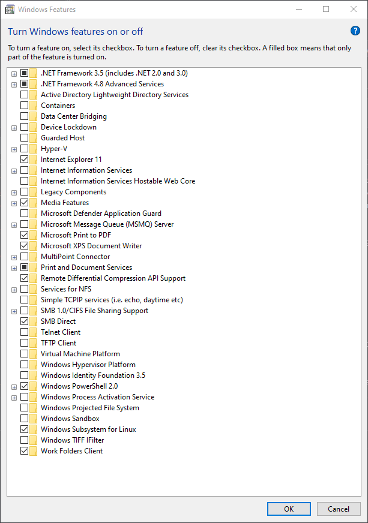

Beckhoff testing
Building, simulating and testing the code
Note
The Beckhoff XAR runtime environment does not support windows 11. This means that if you are on a Windows 11 development PC, you cannot run the Beckhoff tests.
Beckhoff XAE (the editor) is supported on Windows 11.
You may need to disable some windows features, such as Hyper-V, Windows Hypervisor Platform etc. For reference, here is a working setup and its features (click to expand)

To revert this run: Enable-WindowsOptionalFeature -Online -FeatureName Microsoft-Hyper-V -All in an elevated Powershell window.
Beckhoff code can be run as a simulated system on a developer machine by doing the following:
Clone
BeckhoffTestRunnerusinggit clone --recurse-submodules https://github.com/ISISComputingGroup/BeckhoffTestRunner.git C:\Instrument\Dev\BeckhoffTestRunner\Run
settick.batwith admin privileges (this requires a reboot, but do it after the next step)Download and install VERSION 4024.11(and no later!) of TwinCAT 3 XAE from
<public_share>\installers. The XAE is really just a DLL and a Visual Studio plugin. Reboot after installing. ~TwinCAT 3 XAE If you do not have permission ask IDD~.Run
build.batto build thetwinCATAutomationToolsbinaries, which then sets up a working simulated PLC.To run a PLC locally you need a license. Open TwinCAT XAE shell, select “open solution” and open
C:\Instrument\Dev\BeckhoffTestRunner\PLC_solution\solution.slnNavigate in the solution explorer tosolution -> SYSTEM -> License- open this and select “7 days trial license”. You may now close the XAE Shell.run
run_tests.batin theBeckhoffTestRunnerdirectory to begin testing. You should notice that your system tray icon turns green which means you are running a simulated PLC and testing against it.
NB the IOC tests do not stop the PLC at the end of the run, however this isn’t a problem as the PLC is restarted when the IOC tests start.
When you have finished testing/reviewing a PR, it is best to run unsettick.bat as admin and reboot - otherwise you will have loads of “time discontinuity detected” messages in IOC logs
Other information on testing and configuring a Beckhoff
Using XAE shell to manually build a PLC
manual steps
Ensure that you have the following toolbars enabled in the XAE shell (
Tools > Customize...):TwinCAT PLCTwinCAT XAE Base
Click the
Activate ConfigurationbuttonTwinCAT will ask you to enter a code to get a trial license. You will need to do this once a week.
If prompted if you wish to start the system in
Run ModeclickOk. Otherwise start run mode using the button next toActivate Configuration
You now have a simulated Beckhoff PLC running on your PC. This behaves the same as real hardware and so all development can be done against it. You could now also run an IOC up talking to this local PLC.
To see what is happening inside this PLC in more detail, and to change values, you can use the login button
Simulate an Instrument
To simulate an instrument’s Beckhoff and make it virtual rather than driving physical motors etc. you need to:
Follow the above steps
find the repo for that particular MCU within https://github.com/ISIS-Motion-Control
git clone --recurse-submodules <repo> <dir>open up the solution in TwinCAT XAR
change the
MCU_xxxin the dropdown next to “solution” to<local>
There are a few things we need to disable in XAR in order to get this instance entirely virtual. these are:
(under the “solution” in the solution explorer)
License:
in SYSTEM -> License remove any dongles (these are normally physical USB sticks)
generate a “7 days trial license” from the top-level screen
I/O:
in I/O -> Devices, disable all devices that show up by right-clicking and selecting “disable”
Safety:
in SAFETY, disable all safety instances
Motion:
in MOTION -> NC - Task 1 SVB go to Axes and then expand all axes, then go to Enc and change the “type” to “Simulation encoder”
After doing all of this you should be able to build the solution from “build” and then hit activate(icon that looks like stairs) and run it locally.
Continuous Integration
Warning
This is currently broken and this documentation will become out-of-date until https://github.com/ISISComputingGroup/IBEX/issues/7552 is complete to get them running again.
Jenkins
Beckhoff PLC code is being developed by people who do not have CI expertise and have their own repository structures yet we want integration into some form of CI to be as easy as possible. This lent itself to the following structure:
A
BeckhoffTestRunnerrepository that is owned by us and contains the jenkinsfile and other utilities required for CIEvery branch on this repository (apart from master) then pulls a different PLC project down (note each project could be from a different repository or from separate branches on the same repository)
The jenkinsfile can then do the one or both of the following:
Build the project (currently assumed to be called
solution.slnat the top of pulled PLC project)Run any IOCTestFramework tests (currently assumed to be in a
testsfolder at the top of the pulled PLC project) - these will likely be written by us
This means that the workflow for adding new PLC projects into CI is:
A PLC developer writes their code (making sure the solution is called
solution.sln)They give us a link to the repo and branch that contains the code
We create a new branch on
BeckhoffTestRunnerand modify it to point at their repoAt this point they have CI for building their code
We make a decision about whether the code requires any system tests and if so add some into their repository
To actually run tests we use the Beckhoff automation interface which can do any of the things you can do in the TwinCAT XAE automatically through DCOM. AC# (Beckhoff do not fully support a Python interface 😢) program (twinCATAutomationTools) has been written to leverage this interface in the following way to write integration tests for the Beckhoff:

Jenkins will pull a branch of BeckhoffTestRunner.
build.batis run to do the following:Build the
TwincatAutomationToolssolution, twinCATAutomationToolsUse the
twinCATAutomationToolsto import thetest_configinto the generic TwinCAT Solution and build the PLC code using theautomation interface. This build will also create a*.tpyfile, which outlines how to connect to the PLC and can be used to configure the IOC itself.
The IOC test framework is started. This will use the
TwinCATAutomationToolsprogram to run a local simulated PLC. Then startup and test the Beckhoff TwinCAT in the usual way.
This is currently being run on the ndw1926 node on Jenkins. A quirk of using this DCOM interface is that the Jenkins slave must be run as an interactive user and thus not as a service. To do this there is a bat file that should run on startup inside C:\Users\ibexbuilder\AppData\Roaming\Microsoft\Windows\Start Menu\Programs\Startup.
The current Beckhoff applications that are being run through tcIOC and the CI pipeline discussed above are:
dummy_PLC- a PLC that does very little, basically used to test that fundamental tcIOC comms works
old_ISIS_code - this is the old ISIS prototype motion code that is currently on the CRISP jaws. Hopefully this code can be removed once the jaws are moved on.
ESS_base_code (now linked to by
mainof theBeckhoffTestRunnerrepository) - this is the collaboration code that we will be using go forward.
MCAG (defunct) - click to expand
This IOC was originally written by ESS. It uses an ASCII protocol over TCP/IP to do the communication and is very specifically designed for motion. There is a simulator which can be run using the following steps:
cd EPICS\support\MCAG_Base_Project\master\epics\simulatordoit.batStart the IOC (host macros needs to be set to 127.0.0.1:5024)
~Currently this is only being run on IMAT. It should soon be replaced by the collaboration code.~ - It has been replaced by the new code, so is now defunct.
currentTime::getCurrentTime(): time discontinuity detected
This is a weird error that seems to occur sometimes when running a Beckhoff simulator on a dev machine. To stop it you need to do run unsettick.bat script in tcioc\master and reboot. NB this should never happen on an instrument machine as they do not run simulated Beckhoffs.